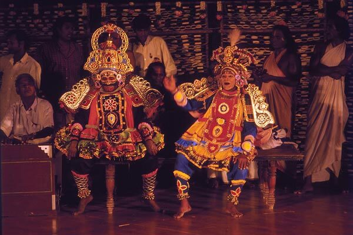
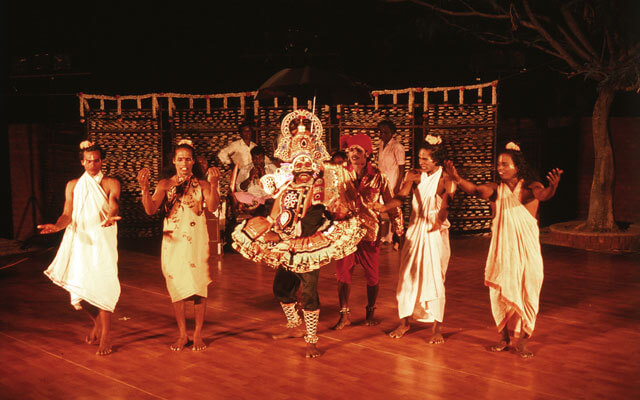
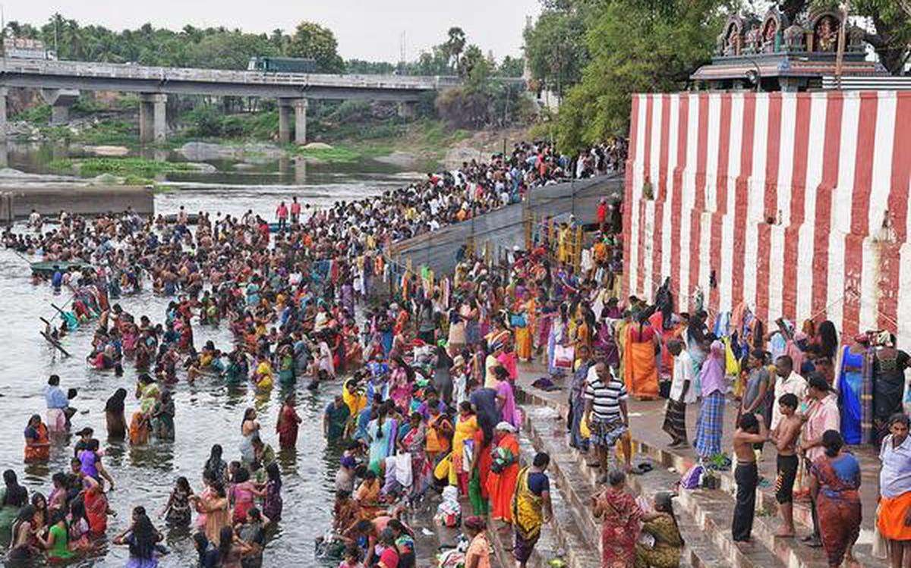
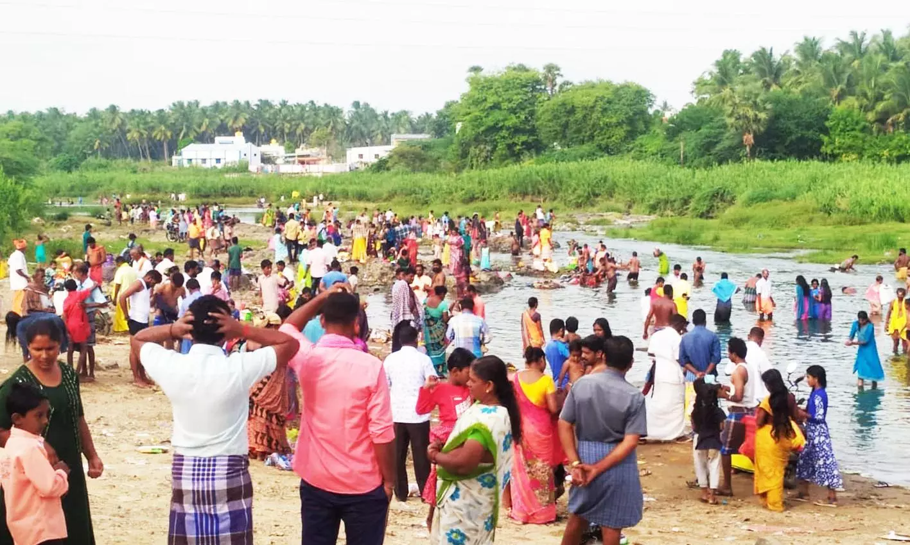

Traditional performances like Villupattu (a form of musical storytelling) and Karagattam (a folk dance performed balancing pots on the head) are integral to local celebrations and festivals.Street Theatre Known as Theru Koothu, this ancient form of theatre, often performed in open spaces, dramatizes epics like the Ramayana and Mahabharata,blending music, dance, and dialogue. Puppetry Bommalattam, a traditional puppet show, is a unique cultural performance in Dharmapuri, where puppets depict stories from mythology and folklore.Many temples in Dharmapuri host Natyanjali (dance performances) during festivals, where classical dance forms like Bharatanatyam are performed as offerings to deities.During festivals like Pongal, traditional performances such as Silambattam (a martial art form) are showcased, celebrating the agrarian culture of the region.
 Adiperukku, also known as the Aadi 18 is a Tamil festival celebrated on the 18th day of the Tamil month of Aadi (July-August). It is dedicated to water and the rivers, particularly the Cauvery, which is crucial for agriculture in the region.Devotees gather along riverbanks and water bodies to perform rituals, offering flowers, rice, and other items to the river, praying for prosperity, good rains, and a bountiful harvest.n Dharmapuri, the festival is marked by special prayers in temples, along with community feasts and music. Families come together to celebrate and thank the rivers for sustaining life.The festival underscores the deep connection between the people of Dharmapuri and their natural environment, particularly the importance of water resources in their daily lives and agricultural practices.
 The Theerthamalai Theru Function is held in Theerthamalai, a sacred hill near Dharmapuri, which is famous for the Theerthagirishwarar Temple dedicated to Lord Shiva.The festival is a major religious event where devotees from Dharmapuri and surrounding areas gather to participate in the annual chariot procession (theru). The temple is believed to have spiritual significance, especially during theTamil month of Panguni (March-April). The highlight of the festival is the grand procession of the temple chariot, which is beautifully decorated and pulled by devotees through the streets. This event symbolizes the journey of the deity through the town, blessing the devotees.Special poojas and rituals are conducted during the festival, and devotees offer prayers, flowers, and other offerings to Lord Shiva, seeking blessings for health, prosperity, and spiritual upliftment.The Theru Function is not just a religious event but also a cultural gathering, where traditional music, dance, and folk performances add to the festive atmosphere, making it a significant celebration in Dharmapuri.